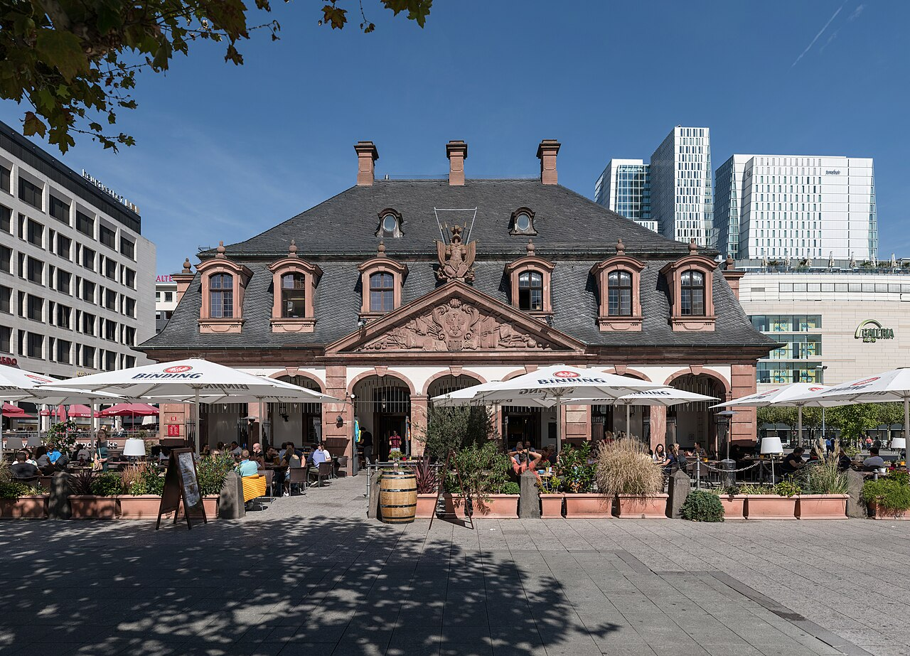

Frankfurt, Duisburg, Dortmund: Drei tamilische Straßenfeste für 2026 angekündigt
Hauptwache, Duisburg-Ruhrort, Dortmunder U: Für Juni bis September 2026 waren drei tamilische Feste mit Essen, Musik und Tanz angekündigt.


Drei tamilische Feste standen zwischen Juni und September 2026 im Kalender: in Frankfurt am Main, in Duisburg und in Dortmund. Angekündigt hatte sie das Portal Tamils.co; ein Bericht über den Verlauf liegt uns nicht vor.
Den Anfang sollte das Frankfurt Tamil Street Festival 2026 an der Hauptwache machen, vom 26. Juni, 15 Uhr, bis zum 28. Juni, 23 Uhr. Laut Ankündigung veranstaltete Zineflix drei Tage unter freiem Himmel mit Essen, Musik, Kultur und Unterhaltung, für die tamilische Community und alle anderen Gäste.
Am 29. August folgte in Duisburg-Ruhrort das Europa Tamil Vizha 2026, ein Familientag von 11 bis 20 Uhr in der Eisenbahnstraße 27C mit Tanz, Musik, Spielen für Kinder und Essen.
Vom 11. bis 13. September war das Tamil Street Festival 2026 im Park der Partnerstädte am Dortmunder U angesetzt, angekündigt mit mehr als 50 Essens- und Marktständen und mehr als 100 Mitwirkenden.